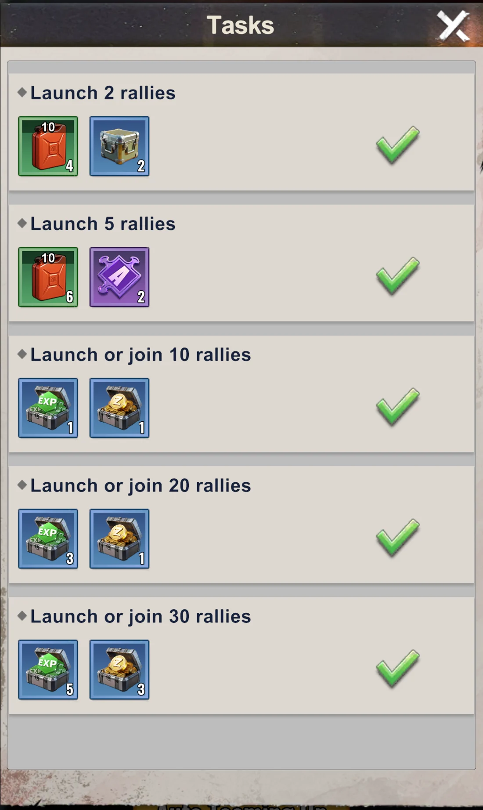

Last Z Daily Checklist - What to Do Every Day
Quick Answer
Before server reset, finish expiring attempts and repeatable tasks; after reset, collect and restart daily systems. Check the active Alliance Duel day before spending saved resources, aim to unlock all nine daily chests, and keep Idle Reward and Radar Events on roughly an 8-hour rhythm. Use the checklist below for the exact task counts.
Last Z Daily Checklist by Priority
If you are searching for what to do every day in Last Z, the best routine is not a giant random to-do list. The strongest accounts repeat a small set of high-value tasks every day and let consistency do the work over time.
1. Trucks — 4 Deliveries + 4 Attacks
Complete 4 truck delivery missions and attack 4 enemy trucks daily. This gives you resources and counts toward multiple events. Don't skip — it's one of the easiest ways to progress.
2. Bounty Missions + Plunder + Helps
Complete your Bounty Missions. Do 5 plunders from other servers for cross-server rewards. Help alliance members 5 times — focus on orange help requests as they give better rewards to your allies.
3. Full Preparedness — 18 Points
Earn at least 18 points in Full Preparedness every day. This unlocks daily rewards and contributes to weekly milestones. Easy points from activities you're already doing.
4. Furylord — 4 Attacks with Buffs
Attack Furylord 4 times daily. Always activate opponent attack buff before attacking. Use supreme general appointment for bonus damage. Check the 50% bonus faction and use those heroes when possible.
For damage setup, buffs, and faction timing, see the Furylord Guide.
5. Danger Lurks — Launch 5, Complete 30
Open Event Center → Danger Lurks and launch 5 rallies, then launch or join enough to reach 30 total. Your launches count toward the total; you do not need 35 rallies. The task milestones are 2 and 5 launches, plus 10, 20, and 30 launched or joined rallies. Auto Teaming Up helps with joins but cannot replace your own launches.
Check every task counter and claim the completion reward before the event refresh.
View the in-game danger lurks launch and participation tasks
{kind=link}

Completion rewards include an orange hero fragment and 200 Badges.
6. Mines — Occupy 4
Keep 4 mines occupied at all times. Higher level mines = better resources. Check periodically as mines can be captured by other players.
For better gathering and long-term resource flow, use the Resources Guide.
7. Hot Events — All Free Tasks
Check Hot Events tab and complete all free tasks. Claim all available rewards. These reset regularly, so check multiple times per day.
8. Idle Reward — Every 8 Hours
Claim Idle Reward every 8 hours. It caps at 8h of accumulation — don't let it overflow. Set reminders if needed: morning, afternoon, night.
9. Free Gifts — Hunt Red Dots
Search the entire game interface for red notification dots. These indicate free gifts, rewards, or claimable items. Check all menus — free stuff is hidden everywhere.
10. Radar Events — Every 8 Hours
Complete all radar events every 8 hours. Pro tip: Stack events on Sunday and Thursday. Claim them on Monday and Friday to maximize Alliance Duel points.
For the exact radar timing logic and when not to force the save, use the Radar Events Guide.
If you want the full daily rotation and event timing layer, use the Events Schedule.
11. Arena — 5 Wins
Win 5 arena battles daily. Use free refresh to find weaker opponents. Don't waste attempts on players you can't beat — easy wins count the same.
For daily target selection, weekly rank value, and Arena Shop priority, use the Arena Guide.
12. Daily Tasks — 150 Points
Complete enough daily tasks to reach 150 points. This unlocks all daily task rewards. Most tasks overlap with activities above, so you'll hit 150 naturally.
Daily Fuel Schedule and Regeneration
Claim 100 fuel from Katrina once per day; her reward refreshes at 00:00 Apocalypse time. Claim another 100 free fuel at 08:00 and 100 at 20:00. These three claims provide 300 fuel per day. Passive regeneration adds roughly 1 fuel every 7 minutes while your fuel is below 150.
All times below use Apocalypse time, the in-game clock.
| Apocalypse time | Fuel to claim | Claim window |
|---|---|---|
| 00:00 | 100 from Katrina | Once per day; refreshes at the next 00:00 |
| 08:00 | 100 free fuel | Before 20:00 the same day |
| 20:00 | 100 free fuel | Before 08:00 the next day |
The 08:00 and 20:00 rewards expire if you miss their claim windows.
Keep Regeneration Running
Use fuel on your daily activities and bring your balance below 150 after claiming rewards. Passive regeneration stops at 150.
Before Logging Off
Leave enough room for fuel to regenerate during your break. At roughly 1 fuel every 7 minutes, an eight-hour break restores about 69 fuel. A balance around 80 or lower leaves room for that recovery; 149 leaves room for only one fuel.
What to Do Before and After Server Reset
Use server reset as the boundary for your daily routine. Finish attempts that are about to refresh before reset, then claim and restart the new day's tasks after reset.
Before Server Reset
- Use remaining Arena attempts and claim any Arena reward that is about to reset.
- Finish truck deliveries and use remaining truck plunder attempts.
- Complete outstanding Bounty Missions.
- Make available Alliance Tech donations and use alliance helps.
- Check for claimable alliance rewards that will not remain available after reset.
After Server Reset
- Claim the new daily, VIP, login, and active-season rewards available to your account.
- Send the next trucks and Wandering Traders.
- Restart Bounty Missions, radar tasks, gathering, and other repeatable daily activities.
- Check the current Alliance Duel scoring table before using saved items.
- Plan the day around unlocking all nine Alliance Duel chests.
Not every task appears on every account or in every season. If a system is missing, skip it and continue with the evergreen checklist.
Other Daily and Recurring Activities
Some activities are not part of the core daily checklist, but they still matter a lot over time. These are the tasks and events that compound your account value if you stay consistent with them.
- Tyrant, Zombie Siege, Furylord, Canyon Clash, Zombie Saga — participate in every event with full power and focus
- Hero Battlefield — go as far as possible, complete for every faction at least once per refresh
- Help Button — click it constantly, this adds huge value for all alliance members
- Alliance Tech — donate to marked upgrades whenever available. Hold the resource-donation button to make repeated donations; check the cost so you do not use the Diamond option by mistake.
- Area Exploration — push as far as possible for rewards
- Troops — always train at the highest available tier
- Capital positions — apply for a position whose bonuses match your next task; see the position bonuses and application steps.
Capital positions: choose a bonus and apply
You can apply for an available position in your own server's Capital. Open Position Appointment, select the position you want, and tap Apply. Check Apply Conditions on the positions screen and the Scheduled Appointment List on the position card when planning your turn.
For building upgrades, choose Secretary of Construction; for technology, Secretary of Research; for gathering, Secretary of Agriculture. You can hold only one official position at a time.
| Position | Bonuses |
|---|---|
| Secretary of Construction | Construction Speed +15%; Free Construction Duration +3,600 s (1 hour) |
| Secretary of Research | Research Speed +15%; Reduces Research Duration +3,600 s (1 hour) |
| Secretary of Agriculture | Gathering Speed +35%; Resource Yield +20% |
| War Commander | Troop ATK +10%; Troop DEF +10% |
| Supreme General | Troop ATK +10%; Troop ATK in Siege Attacks +10% |
| Secretary of Defense | Troop ATK in Siege Defenses +10%; Troop DEF in Siege Defenses +10% |
| First Lady | Resource Yield +10%; Gathering Speed +20% |
| Vice President | Construction Speed +5%; Research Speed +5% |
Applying does not mean you already hold the position. The President can appoint players based in the state, and the First Lady can appoint officials except to her own position. The Vice President can send state-wide mail for the President.
Research: speed and free completion are different bonuses
Secretary of Research adds +15% Research Speed and extends your free research-completion window by 1 hour. The extra hour stacks with other early-completion bonuses, so an ongoing research timer can be finished for free once its remaining time fits within your combined allowance. Check the remaining timer against that allowance while you hold the position.
View Capital position cards and appointment rules


Make Alliance Duel Part of the Daily Routine
Opening all nine daily Alliance Duel chests is a core daily target. Some days are harder for F2P accounts, so the solution is to save the right resources and use them only when the active scoring table rewards them.
Check the Scoring Day Before You Spend
Open the Total Score tab before using radar claims, hero fragments, speedups, wrenches, badges, or other saved items. If an item does not score today, keep it for the correct Alliance Duel day.
Aim for All Nine Daily Chests
Treat the nine chests as the daily finish line. Alliance Recognition and a prepared resource reserve make that target easier, but do not empty a long-term reserve on a low-value action just to force the final chest.
Use the Alliance Duel Guide for the day-by-day scoring plan and the Alliance Recognition guide for the research path that improves chest access and scoring.
Best Refugees for Daily Progress
Refugees matter because they improve your account every day, not just during one event. If you want better daily efficiency, refugee priority is one of the strongest long-term systems to understand.
Top Refugee Picks
- Butler / Scientist — excellent utility, strong passive bonuses
- Diplomat — great for promotions and alliance benefits
- Instructor / Officer — solid combat and training bonuses
For full ticket priority and refresh strategy, see the Refugees Guide.
Best Purchases for Faster Daily Progress
If you spend at all, the best purchases are the ones that improve your account every day. Long-term productivity upgrades beat short-term convenience almost every time.
Highest Value Items
If you're going to spend, these give the best long-term value:
- +3 Additional Workers — dramatically speeds up base building
- 2nd Laboratory — doubles your research speed
- Advanced Mode License — unlocks powerful features
- ApocaAid Monthly Pass — best daily value for consistent players
- Apoca Treasure of the Day — good value rotating deals
For spending priority and long-term account value, see the F2P Guide.
Frequently Asked Questions
What should I do every day in Last Z?
Do trucks, bounty missions, Full Preparedness, Furylord, mines, radar, arena, and enough tasks to reach 150 daily points. The best routine is repeating these core tasks consistently every day.
How often should I check Idle Reward?
Every 8 hours. It caps at 8 hours of accumulation, so checking more often doesn't help. But don't let it sit longer — you lose potential rewards. Morning, afternoon, and night works well.
When should I do radar events?
Every 8 hours. If possible, stack radar events on Sunday and Thursday, then claim them on Monday and Friday to help Alliance Duel scoring.
How do I maximize Furylord damage?
Always activate opponent attack buff before attacking. Use supreme general appointment. Check which faction has 50% bonus damage and prioritize those heroes. Do all 4 attacks daily.
Which daily tasks matter most for fast growth in Last Z?
Trucks, bounty missions, Full Preparedness, Furylord, radar, arena, and daily task completion matter most because they give repeatable progress across resources, points, and event rewards.
How does the daily checklist help Alliance Duel?
Check the active Alliance Duel scoring day before spending saved items, then aim to unlock all nine daily chests. Radar claims, hero fragments, speedups, wrenches, badges, and other resources should be used when that day's scoring table rewards them.
What should I check before logging off for the night?
Check whether you are holding exposed resources into a risky window. Spend them first if possible, and if you still need protection, use the Shield Strategy guide for the Friday reserve rule, Alliance Shop shield value, and overnight raid safety.